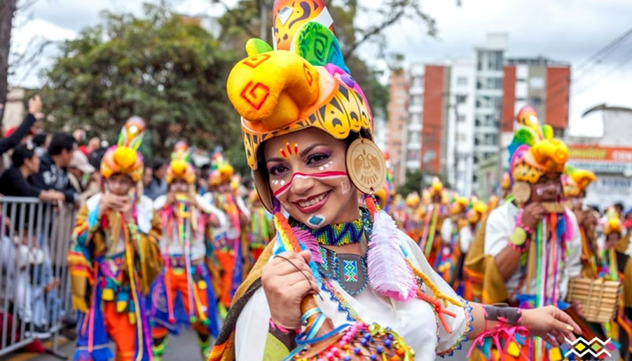
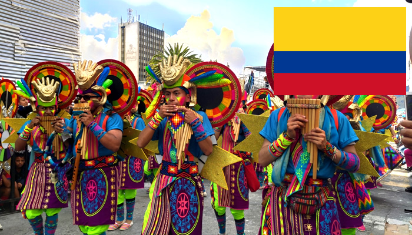
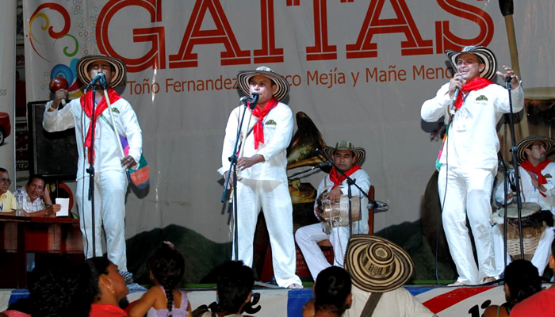

A cultura da Colômbia é puro ritmo, alegria, cores e tradições. Tudo isso se manifesta na lista interminável de feiras, festivais e carnavais que acontecem no país. Partindo para o lado da arte, podemos citar as músicas e danças, carnavais, além de seus famosos e premiados escritores. A cúmbia leva o crédito de ritmo do país. Mas o reggaeton dançante também é marca registrada nas festas. Há também aqueles ritmos tradicionais, como o Bambuco (com elementos indígenas), chandé (ritmo alegre dos carnavais é uma mistura indígena com africana) e o vallenato (cantos de amor com acordeón, trazido pelos europeus).
ARTE &
CULTURA


CARNAVAL DE NERGOS Y BLANCOS
O Carnaval de Negros y Blancos é o segundo maior da Colômbia e abre o calendário festivo no país. A festa mescla tradições étnicas andinas e do Pacífico, sendo dividida em quatro etapas. Primeiro, acontece o desfile inaugural, seguido pelos dias do negro e branco, finalizando com o encerramento. Comemorado na cidade de Pasto, entre 2 e 7 de janeiro, reserva os dois últimos dias para os acontecimentos mais importantes.
FESTIVAL NACIONAL AUTÓCTONO DE GAITAS
Todos os anos, no mês de agosto, grupos de Gaitas, dançarinos, entre outros artistas de diferentes regiões do país se reúnem para participar do Festival Autônomo de Gaita de São Jacinto. O festival reúne os maiores expoentes e intérpretes deste tradicional instrumento do folclore caribenho colombiano.